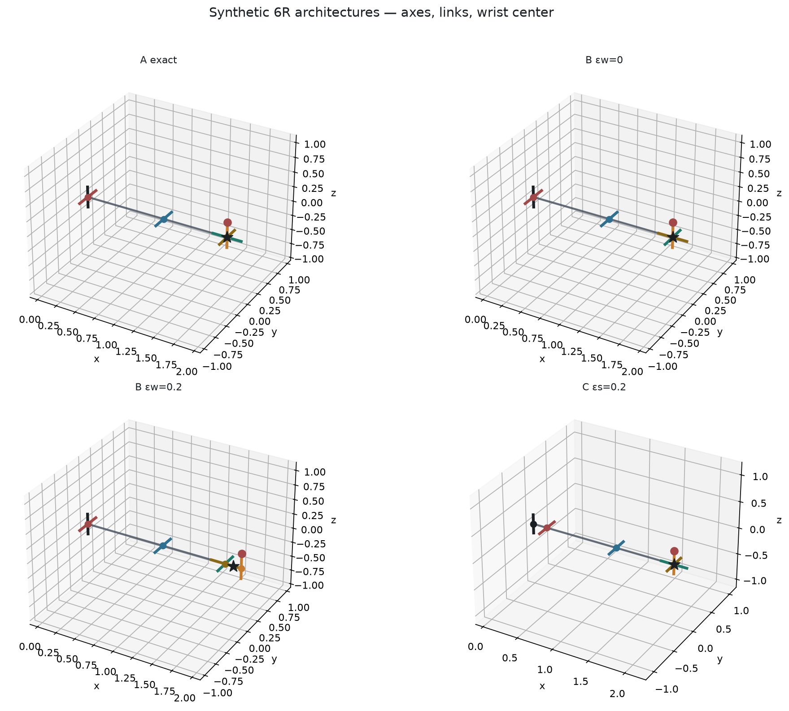
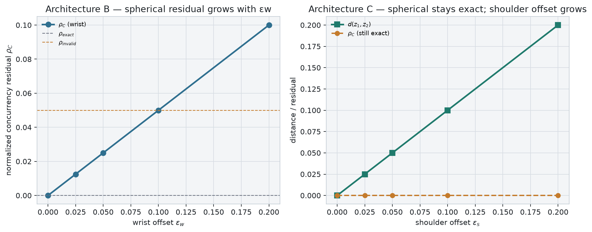

Architectures A/B/C with explicit axis lines, concurrency residual ρ_C, and exact / approximate / invalid labels. No URDF, no joint limits.
Exact spherical reduction is required before trusting orientation classification. Approximate cases must display ρ_C beside every claim.
A exact · B at εw=0 and 0.2 · C at εs=0.2. Links, axes, and wrist-center candidate c*.

Architecture B residual grows with wrist offset. Architecture C keeps an exact spherical wrist while the shoulder gap d(z₁,z₂) tracks εs.

Filter by family. Status badges come from named residual thresholds.